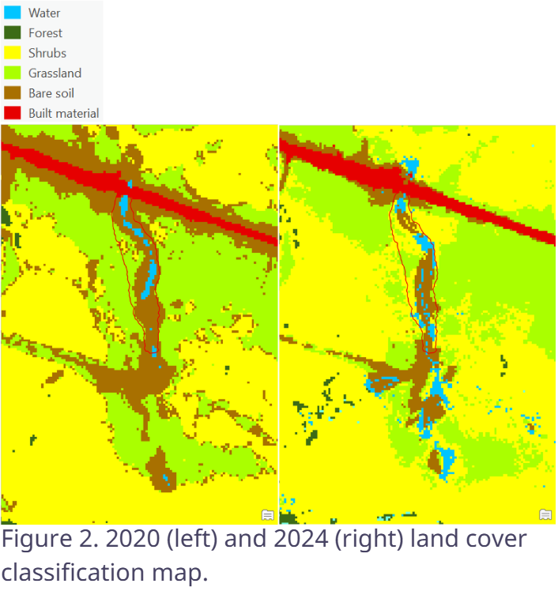
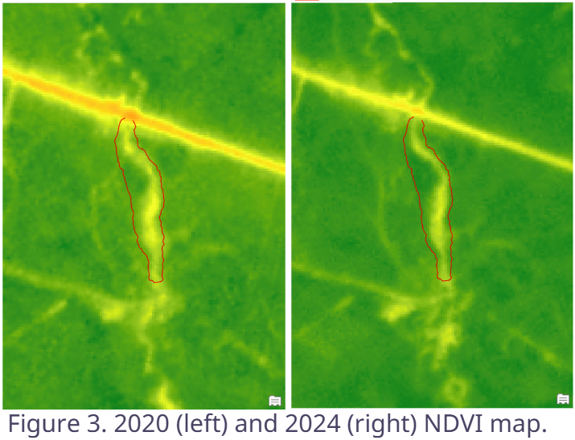
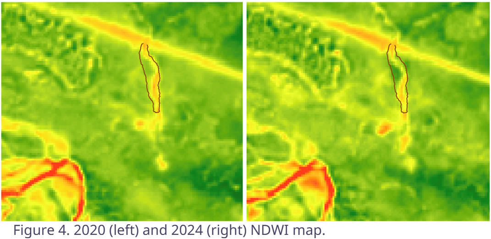

Overview
This project focused on monitoring stream restoration at Radiant Creek using remote sensing products. The analysis used imagery and derived raster outputs to examine vegetation, water-related patterns, and land cover conditions across the restoration area.
Methods
- Obtained Satellite imagery from PlanetLabs and Corponicus Browser.
- Preprocessed and clipped imagery to study area.
- Used supervised machine learning to produce landcover classification rasters.
- Used raster calculator tool to produce NDVI maps using red and NIR band.
- Used raster calculator tool to produce NDWI maps using NIR and SWIR band.
- Evaluate change using GIS tools.
Outcome
The project created a set of remote sensing products that can support restoration monitoring by showing how vegetation, surface moisture, and land cover vary across the site. Together, these outputs provide a stronger picture of current stream conditions and help communicate restoration progress visually.
Radiant Creek Images


